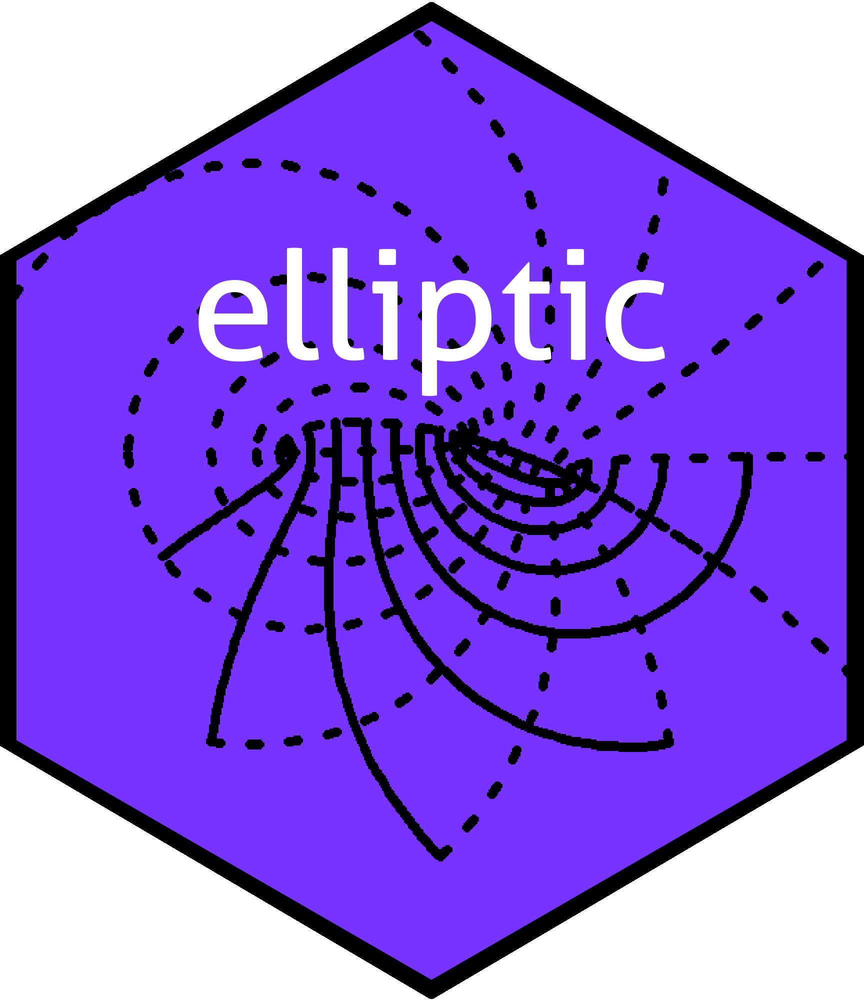

Overview
An elliptic function is a meromorphic complex function that is periodic in two directions. That is, there exist two nonzero complex numbers with such that
whenever is defined; note carefully the factors of 2. There are two natural ways of presenting elliptic functions: that of Weierstrass, and that of Jacobi. Historically, the Jacobi form was first presented and is the most practically useful, but the Weierstrass form is more elegant (IMO).
Terminology follows that of Abramowitz and Stegun wherever possible.
Installation
To install the most recent stable version on CRAN, use install.packages() at the R prompt:
To install the current development version use devtools:
And then to load the package use library():
The package comes with an extensive and detailed vignette; type vignette("elliptic") at the R commandline.
The package in use
The Weierstrass elliptic function is evaluated numerically by P(), which takes the half periods . Thus
z <- 0.3 + 0.2i
omega1 <- 5+1i; omega2 <- 1+7i # half-periods
f <- function(z){P(z,Omega=c(omega1,omega2))}
c(f(z),f(z + 10+2i), f(z + 2+14i)) # should be equalThe elliptic functions can be visualised using view():
x <- seq(from=-4, to=4, len=200)
y <- x
z <- outer(x,1i*x, "+")
f <- P(z, c(1+1i,2-3i))
par(pty="s")
view(x,y,f,real.contour=FALSE,drawlabel=FALSE,axes=FALSE,xlab="Re(z)",ylab="Im(z)", main="P(z,1+i,2-3i)")
axis(1,pos = -4)
axis(2,pos = -4)
lines(x=c(-4,4),y=c(4,4))
lines(y=c(-4,4),x=c(4,4))
Related functions include (sigma() and the (zeta()).
Jacobi forms
Jacobi’s elliptic functions are implemented in the package with their standard names sn(), cn(), dn() etc. For example:
view(x,y,sn(z,m=6),real=FALSE,drawlabel=FALSE,axes=FALSE,xlab="Re(z)",ylab="Im(z)", main="The Jacobi sn() function")
axis(1,pos = -4,at=c(-4,-2,0,2,4))
axis(2,pos = -4,at=c(-4,-2,0,2,4))
lines(x=c(-4,4),y=c(4,4))
lines(y=c(-4,4),x=c(4,4))
The Jacobi forms are useful in physics and we can use them to visualise potential flow in a rectangle:
n <- 300
K <- K.fun(1/2) # aspect ratio
f <- function(z){1i*log((z-1.7+3i)*(z-1.7-3i)/(z+1-0.3i)/(z+1+0.3i))} # position of source and sink
x <- seq(from=-K,to=K,len=n)
y <- seq(from=0,to=K,len=n)
z <- outer(x,1i*y,"+")
view(x, y, f(sn(z,m=1/2)), nlevels=44, real.contour=TRUE, drawlabels=FALSE,
main="Potential flow in a rectangle",axes=FALSE,xlab="",ylab="")
rect(-K,0,K,K,lwd=3)